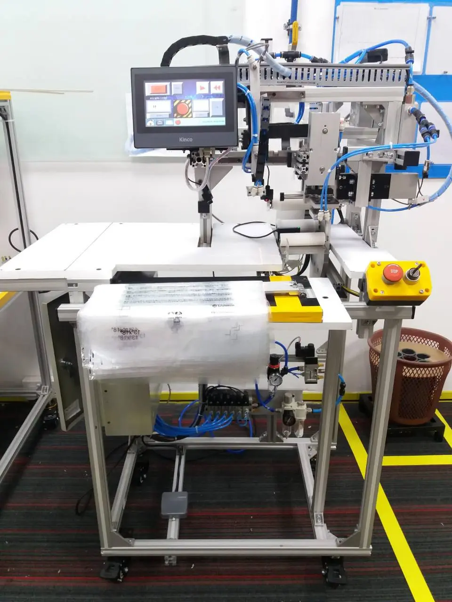
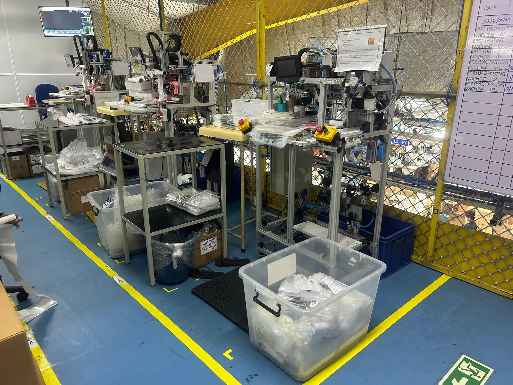

01


VISION GUIDEDMACHINE DESIGN · PLC/HMI
Polybag Label Pasting Machine
Led the design and development from concept to commissioning for replacing the manual sticker pasting process on polybags, improving accuracy and speed. Reduced cycle time by 1.5 seconds per operation, enhancing Standard Minute Value (SMV) performance.
1.5 s cycle saving9,000 operations/day3 machines
SolidWorksOpenCVPLC/HMIPneumatics